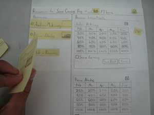
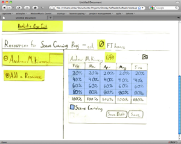
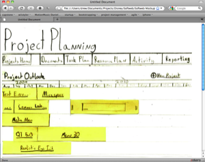
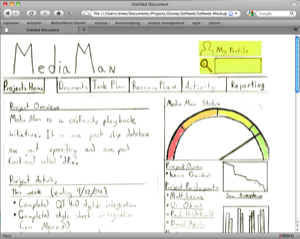
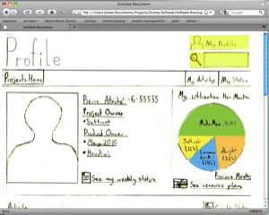

Softweb - Artist Software Management
Softweb is a project planning and management system currently being developed by Disney. It was designed over the Summer of 2009 by the Interaction Design team at Disney. I acted as the chief design architect; conducting user research, creating design concepts, testing with teams all culminating into a functional web prototype.
Audience and User Research
The audience for this project included those involved in the software development at Disney Animation Studios. This includes not only technical staff, but the artists and artist support staff whom involve themselves in new production technologies.
Interviews and contextual inquiry methods were conducted with software developers, technical directors, technology managers, and animation technologists to understand their collaborative work processes. From there, roles and common tasks of these individuals and groups were created. These distilled into distinct project needs and directions for ongoing work.
Chief User Research Insights
- Navigation No good way to navigate/search across DAS technology assets
- Structure No agreed structure to add documentation to projects or tools
- Disconnection Project management/documentation tools are disparate, disconnected
- Awareness Little awareness as to who owns or works on what, or what state the work is in
- Adoption Different groups have very different needs – will adopt what works best for them
Design Development
Design for Softweb began at a very high-level. Using the User Research Insights, we realized there was a major conceptual problem in how technology products, and the technical processes to create those products (projects) were viewed. At the time, because the lines between the two were blurred within the software organization, documentation around software use was coupled with detailed technical documentation. This led to confusion amongst creative and technology staff within the organization.
For these reasons, our first job was to conceptually separate project from product. From there, we began breaking down the elements of projects, and how those different elements inter-relate. We then included the roles and distinctive tasks completed by Disney software staff, and mapped them to the potential future-state system.
{kind=link}
{kind=link}
{kind=link}
Paper & Web Prototyping
Softweb became a very large system to wrangle into one design. We began by modularizing the design into functional elements (e.g., Project Portfolio, Project view, Task Management, etc.) We then began sketches and paper prototype concepts to mock up how these separate interaction areas might work. We tested these prototypes with individuals to gain feedback on how the system might impact their work for the better and worse.

{kind=link}
Once we were comfortable with the paper prototypes, we scanned the finished sketch mockups and linked them together using Dreamweaver image maps. This web prototype was then tested with individuals within Software, and eventually used as the presentation prototype to Disney Animation executives.
   